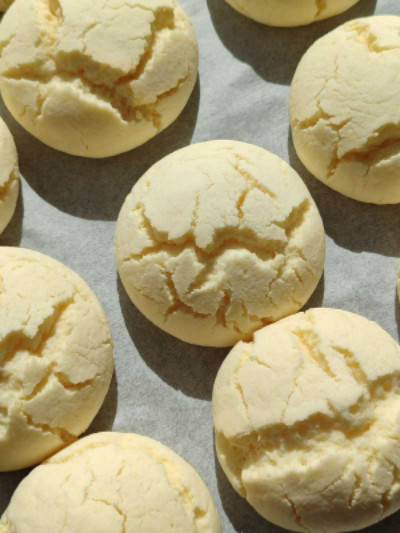
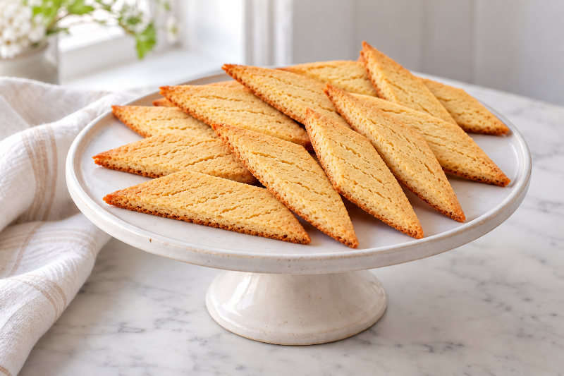
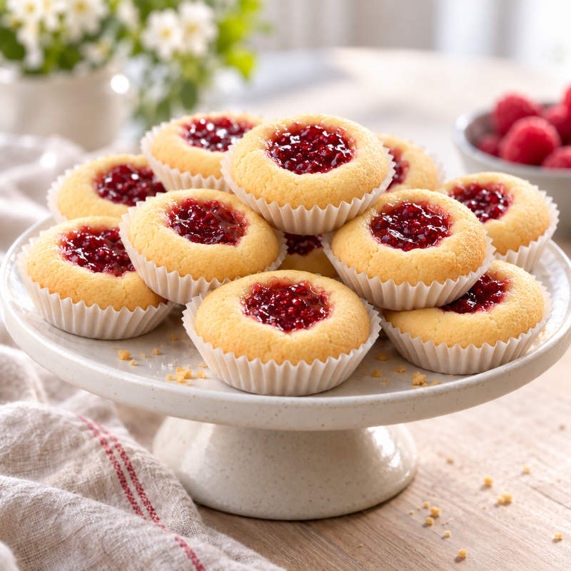
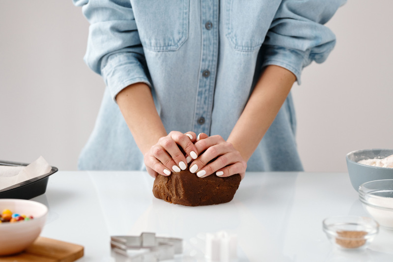
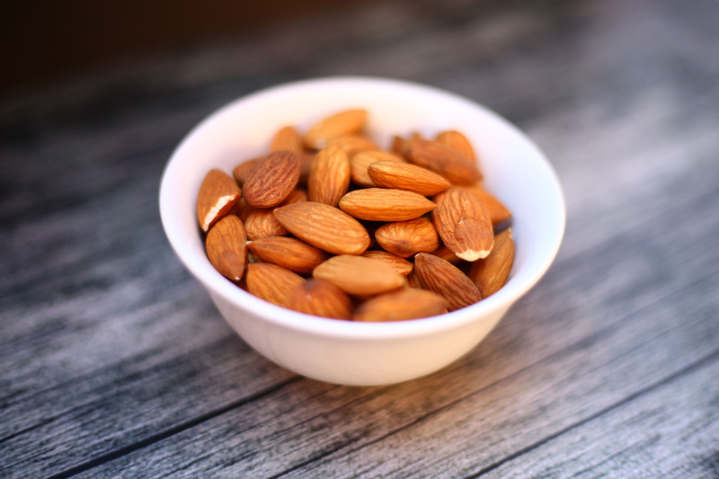
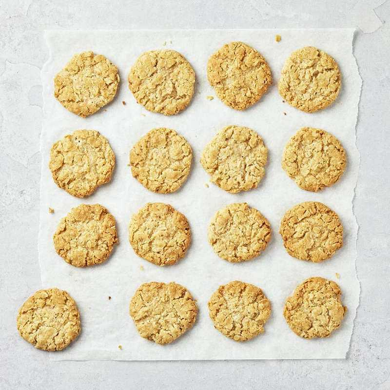
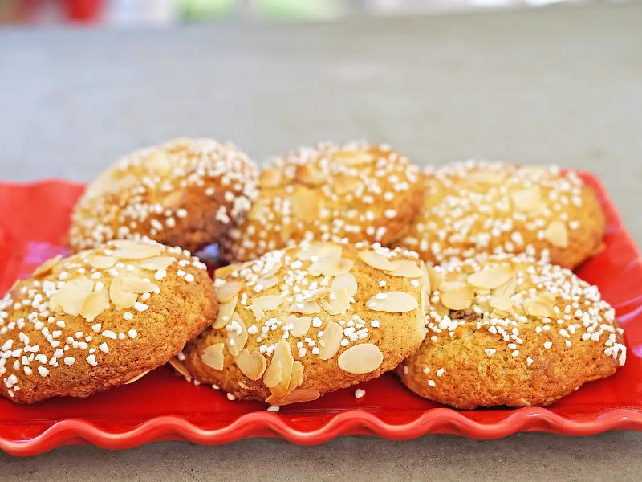

Drömmar

Drömmar är mycket spröda småkakor med mild vaniljsmak som är lätta att baka. Hjorthornssalt gör att kakorna får sin karakteristiskt porösa och ljuvligt frasiga konsistens.
40-45 kakor
Ingredienser
- 100 g smör
- 3 dl strösocker
- 1 dl rapsolja
- 2 tsk vaniljsocker
- 1 tsk hjorthornssalt
- 4 dl vetemjöl
Gör så här:
- Sätt ugnen på 150 °C.
- Rör smör och socker mjukt.
- Tillsätt oljan, lite i taget, under vispning.
- Blanda vaniljsocker och hjorthornssalt med lite av mjölet och rör ned blandningen i smeten. Tillsätt sedan resten av mjölet.
- Rulla små bollar av degen och lägg dem på plåtar med bakplåtspapper.
- Grädda mitt i ugnen i cirka 15-20 minuter och låt kallna på plåten.
Kolasnittar

Kolasnittar är avlånga lite sega småkakor med smak av sirap och vanilj. De skärs i sneda bitar direkt när de kommer ut ur ugnen.
20 kakor
Ingredienser
- 100 g smör
- 1 dl strösocker
- 2 msk mörk sirap
- 1,5 dl vetemjöl
- 1 tsk bakpulver
- 1 tsk vaniljsocker
Gör så här:
- Sätt ugnen på 175 °C.
- Rör smör, socker och sirap mjukt.
- Blanda vetemjöl, bakpulver och vaniljsocker. Arbeta sedan ihop med smörsmeten till en deg.
- Dela degen i två delar och rulla dem till längder ca 40 cm långa.
- Lägg längderna på en plåt med bakplåtspapper och platta till dem.
- Grädda mitt i ugnen cirka 12 minuter.
- Låt kakorna svalna något och skär längderna i sneda bitar medan de fortfarande är varma.
Hallongrottor

Hallongrottor är mördegskakor med en liten grop fylld med ljuvlig hallonsylt. De är både enkla att baka och uppskattade på kakfatet.
20-24 kakor
Ingredienser
- 200 g smör eller margarin
- 1 dl strösocker
- 2 tsk vaniljsocker
- 4,5 dl vetemjöl
- 1 tsk bakpulver
- 1 dl fast hallonsylt
Gör så här:
- Sätt ugnen på 200 °C.
- Arbeta snabbt ihop smör, socker, vaniljsocker, vetemjöl och bakpulver till en deg. Gärna i matberedare.
- Rulla degen till små bollar och lägg dem i små kakformar ca 5 cm i diameter.
- Gör en grop i varje kaka med ett finger eller skaftet på en sked.
- Fyll groparna med hallonsylt.
- Grädda i cirka 12-15 minuter och låt sedan svalna på galler.
Schackrutor

Schackrutor är klassiska småkakor med ett dekorativt rutmönster av ljus och chokladsmakande mördeg. Kakorna blir spröda och ser mycket läckra ut på kakfatet. De imponerar med sitt utseende men är väldigt enkla att baka.
Ca 50 kakor
Ingredienser
- 200 g osaltat smör
- 1 dl strösocker
- 4,5 dl vetemjöl
Ljus deg: 2 tsk vaniljsocker
Mörk deg: 2 msk kakao
Gör så här:
- Ta fram smöret så att det hinner bli rumsvarmt.
- Vispa ihop smör och socker till en jämn smet.
- Tillsätt vetemjöl, lite i taget, och fortsätt röra tills det blir stora smulor.
- Dela degen i två lika stora delar.
- Arbeta in kakaon i den ena delen och vaniljsocker i den andra så att du får en ljus och en mörk deg.
- Dela degarna i två delar så du får två ljusa och två mörka delar.
- Rulla ut till längder och tryck till dem mot bakbordet så längderna får platta kanter. Lägg dem tätt ihop, med två ovanpå de andra så de bildar ett litet schackmönster.
- Låt vila i kylen 1-2 timmar.
- Sätt ugnen på 200°C.
- Ta fram längden och skär ca 3-4 mm tjocka skivor.
- Lägg kakorna på en plåt med bakplåtspapper och grädda mitt i ugnen i ca 8-10 minuter.
Finska pinnar

Finska pinnar är spröda mördegskakor med mandel och pärlsocker på toppen. Trots namnet är de en välkänd klassiker på svenska kakfat.
Ca 60 kakor
Ingredienser
- 200 g smör
- 1 dl strösocker
- 4,5 dl vetemjöl
- 1 tsk vaniljsocker
- 1 dl mandelmjöl
- 1 äggvita
Garnering
- Ca 1 dl hackad sötmandel och 2 msk pärlsocker
Gör så här:
- Sätt ugnen på 175 °C.
- Blanda mandel, mjöl och socker och arbeta ihop med tärnat smör till en deg. Låt vila i kylskåp ca 30 minuter
- Dela degen i 8 delar och rulla varje del till en 30 cm lång längd.
- Lägg längderna på en plåt med bakplåtspapper.
- Vispa upp äggvitan lätt och pensla längderna.
- Strö över hackad mandel och pärlsocker och dela längderna i ca 4 cm långa bitar. Sära bitarna lite så att de inte fastnar i varandra.
- Grädda mitt i ugnen i cirka 10-12 minuter.
Havrekakor

Havrekakor är klassiska svenska småkakor med en härligt spröd yta och en lätt seg konsistens. De får sin goda smak från havregryn och smör och är både enkla att baka och uppskattade till en kopp kaffe eller te.
Ca 32 kakor
Ingredienser
- 175 g rumsvarmt smör
- 4 dl havregryn
- 2 dl strösocker
- 2 dl vetemjöl
- 2 tsk bakpulver
Gör så här:
- Sätt ugnen på 200 °C
- Häll smör, havregryn, och socker i en bunke. Vispa snabbt ihop med en elvisp.
- Rör ihop mjöl och bakpulver och vänd ner i bunken med havregryn och blanda. Arbeta ihop till en fast deg med händerna.
- Forma små bollar av degen och lägg på två plåtar med bakplåtspapper.
- Sätt in plåtarna, i omgångar, i mitten av ugnen ca 10-12 minuter.
- Låt kakorna svalna på plåten.
Mandelkubb

Fikaklassiker från förr! Mandelkubb beskrivs bäst som en blandning av småkaka och bulle med en tydlig smak av mandel.
Ca 20 kakor
Ingredienser
- 100 g smör
- 130 g strösocker
- 60 g ägg
- 200 g gräddfil
- 350 g vetemjöl
- 10 g hjorthornssalt
- 10-12 droppar bittermandelolja
Topping
- 100 g pärlsocker
- 50 g mandelspån
- 100 g gräddfil
Gör så här:
- Sätt ugnen på 200 °C
- Vispa smör och socker vitt. Blanda i gräddfil, ägg och bittermandelolja.
- Blanda vetemjöl och hjorthornssalt. Vänd ner mjölblandningen i smörblandningen. Blanda till en lös deg.
- Häll ut degen på väl mjölat bord, forma till 2 längder och dela varje längd i 10 bitar. Forma varje bit lite fyrkantig.
- Lägg på plåt med bakplåtspapper. Pensla med gräddfil och strö på pärlsocker och mandelspån.
- Grädda ca 12-15 minuter. Låt svalna på plåt.